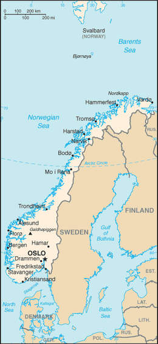

Gjeografia
Gjeografia
Norvegjia është një vend i vendosur në Evropën Veriore në pjesët veriore dhe perëndimore të Gadishullit Skandinav. Pjesa më e madhe e vendit kufizohet me ujin, përfshirë hyrjen e Skagerrakut në jug, Detin e Veriut në jug-perëndim, Oqeanin Atlantik të Veriut (Detin Norvegjez) në perëndim dhe Detin Baren në veri. Ajo ka një kufi tokësor me Suedinë në lindje dhe një kufi më të shkurtër me Finlandën dhe një kufi edhe më të shkurtër me Rusinë në verilindje. Norvegjia ka një formë të zgjatur, një nga vijën më të gjatë dhe më të thyer në botë, dhe rreth 50,000 ishuj larg vijës bregdetare të saj. Shtë një nga vendet më veriore në botë dhe është një nga vendet më malore të Evropës, me zona të mëdha të mbizotëruara nga Malet Skandinave. Lartësia mesatare e vendit është 460 metra (1.510 ft), dhe 32 përqind e territorit ndodhet sipër vijës së pemës. Zinxhiri i majave të tij në një gjatësi vendi është gjeologjikisht i vazhdueshëm me malet e Skocisë, Irlandës dhe, pasi kaloi nën Oqeanin Atlantik, malet Appalachian të Amerikës së Veriut. Gjeologët pohojnë se të gjitha këto formuan një gamë të vetme para shpërbërjes së superkontinentit antik Pangea. [1]
Statistikat
Koordinatat gjeografike: 62 ° N 10 ° E Referencat e hartave: Evropë Sipërfaqja: gjithsej: 324,220 km2 (125.180 mi mi) toka: 307.860 km2 (118,870 mi mi) ujë: 16.360 km2 (6.320 km mi) Me Svalbard dhe Jan Mayen përfshirë: 385.199 km2 (148,726 sq mi) Zona - krahasuese: Zona e afërt është pak më e vogël se Vietnami dhe pak më e madhe se shteti amerikan i New Mexico. Me Svalbard dhe Jan Mayen të përfshirë, zona është pak më e madhe se Japonia. Kufijtë e tokës: gjithsej: 2,515 km (1.563 mi) vendet kufitare: Finlanda 729 km (453 mi); Suedi 1,619 km (1,006 mi); Rusi 196 km (122 mi). Vija bregdetare: kontinentale 25,148 km (15.626 mi); përfshirë ishujt 83,281 km (51,748 mi) [4] Pretendime detare: zona ngjitëse: 10 nmi (18.5 km; 11.5 mi) rafti kontinental: 200 nmi (370.4 km; 230.2 mi) zona ekskluzive ekonomike: 2,385,178 km2 (920,922 km mi) deti territorial: 12 nmi (22.2 km; 13.8 mi) Zona ekskluzive ekonomike e Norvegjisë (EEZ) arrin në 2,385,178 km2 (920.922 mi km). Shtë një nga më të mëdhenjtë në Evropë dhe i 17-ti më i madh në botë. EEZ përgjatë kontinentit përbën 878.575 km2 (339,220 km mi), Jan Mayen EEZ përbën 29.349 km2 (11.332 km mi), dhe që nga viti 1977 Norvegjia ka pretenduar një zonë ekonomike rreth Svalbard prej 803,993 km2 (310,423 km mi). Gjatë periudhës së fundit akullnajore, si dhe në shumë epokë të hershme akulli, praktikisht i gjithë vendi ishte i mbuluar me një fletë akulli të trashë. Lëvizja e akullit gdhendi lugina të thella. Si rezultat i gdhendjes në akull, Sognefjorden është fjordi i dytë më i thellë në botë dhe Hornindalsvatnet është liqeni më i thellë në Evropë. Kur akulli u shkrinë, deti mbushi shumë prej këtyre luginave, duke krijuar fjorde të famshme të Norvegjisë. [2] Akullnajat në zonat më të larta malore sot nuk janë mbetje të fletës së madhe të akullit të epokës së akullit - origjina e tyre është më e fundit. [3] Klima rajonale ishte deri në 1–3 ° C (1.8–5.4 ° F) më e ngrohtë në 7000 para Krishtit në 3000 para Krishtit në optimale klimatike Holocene, (në lidhje me periudhën 1961-90), duke shkrirë akullnajat e mbetura në male pothuajse plotësisht gjatë asaj periudhe. Edhe pse ka kohë që është lëshuar nga pesha e madhe e akullit, toka është përsëri duke u zmbrapsur disa milimetra në vit. Kjo rikthim është më e madhja në pjesën lindore të vendit dhe në pjesët e brendshme të fijeve të gjata, ku mbulesa e akullit ishte më e trashë. Ky është një proces i ngadaltë, dhe për mijëra vjet pas përfundimit të epokës së akullit, deti mbuloi zona të konsiderueshme të asaj që është sot tokë e thatë. Ky shtrat i detit të vjetër tani është ndër tokat më produktive bujqësore në vend.